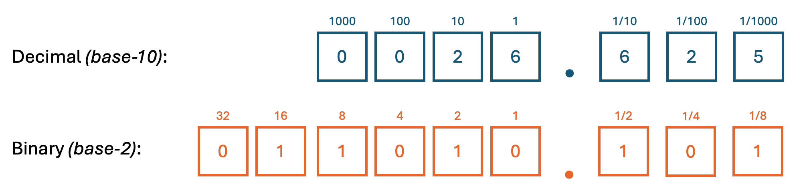

GCSE Link: 3.02 (Binary and Hexadecimal)
 Fixed Point Representation is a way of representing fractions in binary.
Fixed Point Representation is a way of representing fractions in binary.
Have you ever wondered how to store fractions in binary? Well, if we add a decimal point after the number and then a digit after that, this digit now represents a half. Add another digit and it represents a quarter. Then one-eighth, one-sixteenth, and so on. This is called Fixed Point Representation, because the decimal point is always fixed in the same place.
Diagram 1 shows the number 26.625 represented in binary using Fixed Point Representation.
 Diagram 1
Diagram 1

 How many bits would be required to store any fraction from -128 to +127 to at least 6 decimal places using Fixed Point Representation?
How many bits would be required to store any fraction from -128 to +127 to at least 6 decimal places using Fixed Point Representation?
We would need one bit for the sign, seven bits for the rest of the integer, and 20 bits for the
fraction (2-20 = 1/1,048,576). This is a total of 28 bits. This is not very
efficient. We'll learn more about floating point representation, a more efficient way of representing
fractions, on the next page.